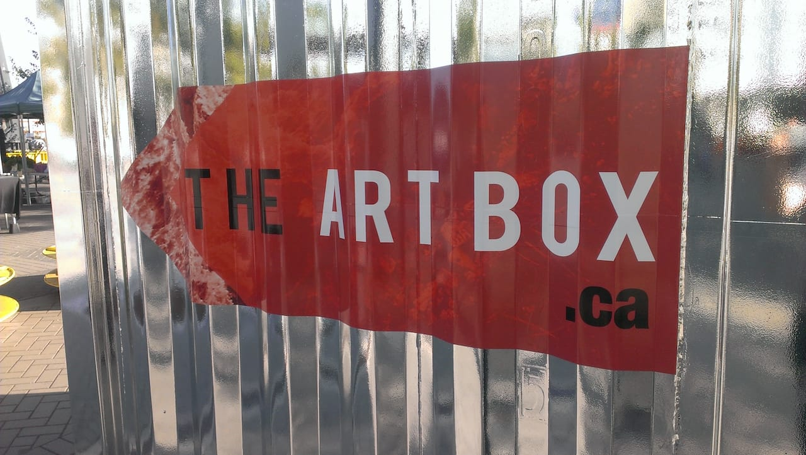
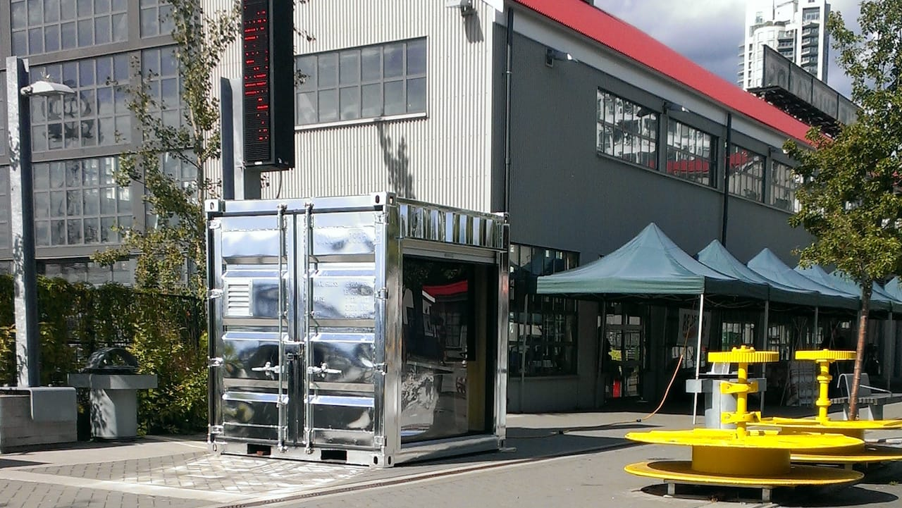
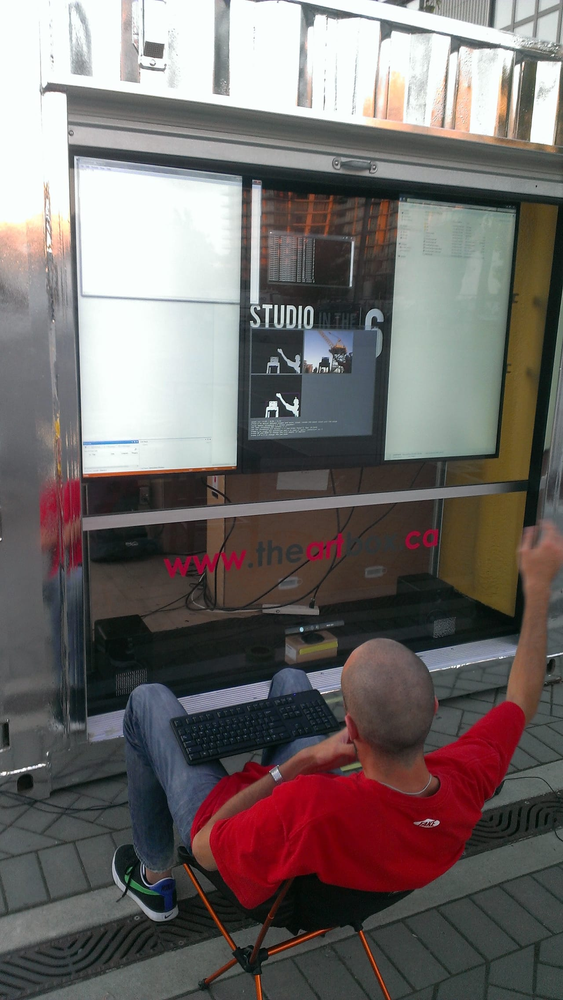

The Art Box was a public art commission from the
City of North Vancouver
for their annual
Studio In The City
program. I was approached and asked to direct a digital art project in tandem with the instructors from the
Digital Media Academy
at Argyle Secondary.
I led and worked with 12 high school students to identify a design problem for the site-specific install location
at Lonsdale Quay, and we collectively decided to design an outdoor interactive video gallery showcasing youth artwork.
In the end, we built a three-channel sequenced video installation controlled by a 3D imaging camera, that unmasked the
artwork underneath the silhouette of the user as they moved their bodies in front of the screens.
The homepage for the project can be seen at
www.theartbox.ca
and the source code for the project is available on my
GitHub.
Thanks to
Leó Stefánsson
and
Patrick Daggitt.
The Art Box from Jesse Scott on Vimeo.


